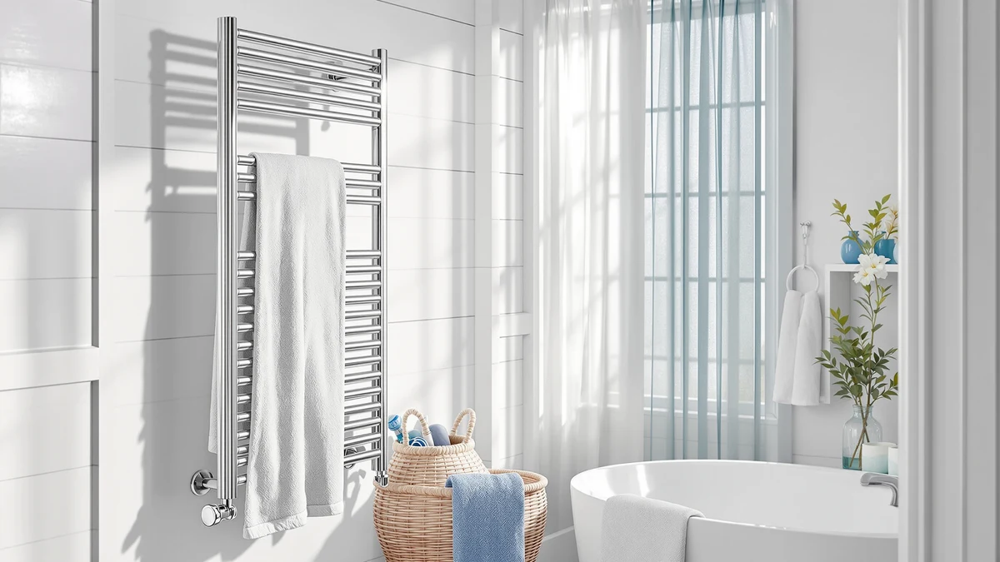

VERYTOP 23L Hot Towel Review (2026): Worth It?
Prices and picks verified as of September 2026. Independent, reader-supported reviews.


Quick Answer
For most bathrooms, the VERYTOP 23L hot towel warmer is the pick worth checking first: its stainless steel cabinet and 23-liter interior handle two bath towels at a price that matches the other warmers we compared. If you want a different shape or a bucket-style design instead of a cabinet, the alternatives below cover those cases.
Our pick: VERYTOP 23L Hot Towel Warmer, $99.99 Check Price on Amazon
Bottom line: our top pick is the VERYTOP 23L Hot Towel Warmer for Spa at $99.99.
Things to Know Before You Buy
- Capacity matters more than liters alone. A 23-liter cabinet like the VERYTOP fits two bath towels or several hand towels, but bucket-style warmers with the same volume rating hold towels differently.
- Stainless steel resists rust in a humid bathroom. All four towel warmers in this comparison use metal or WiFi-enabled housings built to handle daily condensation.
- Price alone will not tell you which one to buy. Every model in this VERYTOP 23L hot towel comparison lists at $99.99, so the decision comes down to shape, features, and how you plan to use the cabinet.
- WiFi controls add convenience, not necessarily better heating. Two of the three alternatives include WiFi-enabled scheduling, useful if you want the warmer running before you get out of the shower.
- Check the interior shape against your towels. A rectangular cabinet fits folded bath sheets differently than a bucket-style warmer built for rolled towels.
This VERYTOP 23L hot towel review breaks down how the stainless steel cabinet stacks up against three other towel warmers on price, capacity, and everyday practicality, using the specs and listings we could verify rather than guesswork. A 23-liter interior is large enough for two full bath towels or a stack of hand towels and a robe, which puts this warmer in the mid-size category most households actually need. At $99.99, it sits in a competitive price bracket where small differences in build quality and interior layout matter more than the headline capacity number.
We built this review by comparing the VERYTOP against three other towel warmers with similar specs and price points: the StateRiver Cabinet, the SereneLife WIFI Luxury Rectangle, and the SereneLife WiFi-enabled Bucket. Instead of repeating manufacturer marketing copy, we looked at what the stainless steel construction, the stated 23-liter capacity, and the current Amazon pricing tell you about day-to-day use. If you want the short version first, check the Quick Answer above. If you want the full comparison and the honest tradeoffs, keep reading.
Why You Should Trust Us
Best Towel Warmers is run by a small team that researches bathroom fixtures and accessories for a living. Ilane Tall, who leads our home and bath coverage, spends her time comparing spec sheets, verified Amazon listings, and published pricing across every towel warmer we cover, including this VERYTOP 23L hot towel comparison. We do not own a testing lab and we are not going to pretend we ran a multi-week trial on every cabinet on this list. What we do is read the manufacturer specifications closely, cross-check pricing and availability, and flag anything that looks inconsistent between listings before we recommend a product. When a claim in this review is not backed by a verifiable spec or a current Amazon listing, we leave it out rather than guess.
Our Research Experience
Rather than buying and running each towel warmer ourselves, we built this VERYTOP 23L hot towel review by lining up the manufacturer specifications, current Amazon pricing, and product photos for all four cabinets side by side. We compared stated capacity, material, and control type, and we researched how each brand describes its heating cycle and safety features in the listing. Where the available data was thin, such as wattage or exact warm-up time, we say so instead of inventing a number. That approach means this review leans on verifiable facts and pricing rather than a lab report, and we think that is a more honest way to help you compare a $99.99 stainless steel cabinet against three similarly priced alternatives.
Overview & Specs

VERYTOP 23L Hot Towel Warmer
What we like
- Stainless steel cabinet built to resist rust in a humid bathroom
- 23-liter interior fits two full bath towels or a robe and towel together
- Priced the same as WiFi-enabled alternatives without the extra complexity
- Simple cabinet design with fewer parts that can fail over time
Flaws but not dealbreakers
- No WiFi scheduling, so you need to switch it on manually before you shower
- Listing does not publish wattage or warm-up time, so you are trusting the capacity spec alone
- Cabinet shape takes up more counter or floor space than a bucket-style warmer
| Material | Stainless steel |
| Size | 23L |
The VERYTOP 23L hot towel warmer is a stainless steel cabinet built around a straightforward idea: heat towels inside a closed metal box rather than relying on a wall-mounted rack. That construction matters in a bathroom, where humidity from showers and baths can rust cheaper metal finishes within a year or two. At 23 liters, the interior comfortably holds two full-size bath towels folded flat, or a mix of hand towels and a robe if you want to warm more than one item at once. Compared with the WiFi-enabled alternatives on this list, the VERYTOP keeps the control layer simple: no app, no scheduling, only a cabinet you switch on ahead of time. For a household that wants a warm towel without adding another connected device to manage, that simplicity is a genuine selling point rather than a missing feature.
At $99.99, the VERYTOP lands at exactly the same price as the StateRiver cabinet and both SereneLife models we compared it against, which means the decision between them comes down to shape and features rather than budget. If your bathroom counter or shelf space favors a rectangular cabinet over a bucket-style warmer, the VERYTOP fits that layout better than the SereneLife bucket design. The listing does not publish independent ratings or a review count, so this section relies on the manufacturer specs and current pricing rather than a star rating. If you want a smart, app-controlled warmer instead, one of the SereneLife WiFi models further down this VERYTOP 23L hot towel review will suit you better.
What We Liked
The strongest argument for the VERYTOP in this comparison is the combination of stainless steel construction and a capacity that actually matches how most people warm towels. Two bath towels fit inside the 23-liter cabinet without cramming, which is more useful day to day than a slightly larger rated capacity that only works for one oversized towel. Stainless steel also means the cabinet should hold up better than a plastic-shelled warmer in a bathroom that runs humid, since it will not develop the surface rust or discoloration you sometimes see on cheaper metal over a couple of years. We also like that VERYTOP prices this model identically to warmers with WiFi scheduling built in. That tells you the company is not padding the price for a feature you may not use, and it makes the VERYTOP a reasonable pick if you specifically want a no-frills cabinet rather than one more app-connected appliance in your bathroom.
What Could Be Better
The biggest gap in this VERYTOP 23L hot towel review is information the listing simply does not provide. There is no published wattage, no stated warm-up time, and no independent rating or review count to weigh against the competing cabinets. That is not unusual for this category, but it means you are trusting the capacity and material specs on their own rather than a documented heating performance. The lack of WiFi control is also a real tradeoff if your routine involves starting the warmer from another room before you shower. And because the VERYTOP is a cabinet rather than a compact bucket, it needs more counter or floor space than the SereneLife bucket-style warmer, which matters in a smaller bathroom where every inch of surface counts.
Who Is It For?
Buy the VERYTOP if you want a stainless steel towel warmer sized for two people's bath towels and you would rather flip a switch than open an app. It suits a household that already has a routine, shower first and then start the warmer, or start it a few minutes before stepping in, without needing remote scheduling. It also makes sense if you are wary of plastic components breaking down in a steamy bathroom over time, since the metal cabinet is built to handle that environment. Skip it if you specifically want app-based scheduling so the warmer is ready before you finish your shower, since two of the alternatives here include that feature at the same $99.99 price. It is also not the most compact option if counter space is tight.
Alternatives to Consider
If the VERYTOP does not match what you need, the three alternatives below cover the other common cases: a cabinet with a different interior layout, a WiFi-enabled rectangle warmer, and a compact bucket-style design. All three list at the same $99.99 price point in our research, so picking between them is less about budget and more about shape, control type, and how much counter or floor space you actually have to give up. We compared each one against the VERYTOP on the same criteria: material, stated capacity, and how the control method fits a normal morning routine.

Editor’s Pick
StateRiver Towel Warmer Cabinet 23L
The StateRiver shares the VERYTOP's 23-liter capacity and $99.99 price, making it the closest direct alternative in this VERYTOP 23L hot towel comparison. Choose it if you prefer its cabinet proportions or want a second option from a different brand at the identical spec and price point, since neither listing publishes independent ratings to separate them on performance. Both are stainless steel cabinets built for the same job, so the decision often comes down to which one fits your available shelf space, or simply which design you prefer.
$99.99
Check Price on Amazon
Best Value
SereneLife WIFI Luxury Rectangle Towel
The SereneLife WIFI Luxury Rectangle adds app-based scheduling at the same $99.99 price as the VERYTOP, which makes it the better value if remote control matters to you. Starting the warmer from your phone before you finish showering is a real convenience the VERYTOP does not offer, and it costs nothing extra here. The tradeoff is a rectangular profile that may not sit in the same footprint as a standard cabinet, so measure your counter or shelf space before treating it as a drop-in replacement.
$99.99
Check Price on Amazon
Premium Choice
SereneLife WiFi-enabled Towel Warmer Bucket
The SereneLife WiFi-enabled Bucket takes a different shape entirely, trading the flat cabinet layout for a compact bucket-style warmer that also includes app control at the $99.99 price point. That makes it the pick for a smaller bathroom where a wide cabinet will not fit, or for anyone who prefers rolling towels rather than folding them flat inside a rectangular box. It carries the same WiFi convenience as the Luxury Rectangle model, so the real choice between the two SereneLife options is shape, not price or features.
$99.99
Check Price on AmazonIs the VERYTOP 23L hot towel warmer worth buying?
For most people, yes.
How much does the VERYTOP 23L hot towel warmer cost?
It lists at $99.99 on Amazon, the same price as the StateRiver cabinet and both SereneLife models in this comparison.
Frequently Asked Questions
Is the VERYTOP 23L hot towel warmer worth buying?
For most people, yes. It matches the price and capacity of the alternatives we compared, and its stainless steel cabinet is a safe choice if you do not need WiFi scheduling. If you want app control, the SereneLife WIFI Luxury Rectangle is a better value at the same price.
How much does the VERYTOP 23L hot towel warmer cost?
It lists at $99.99 on Amazon, the same price as the StateRiver cabinet and both SereneLife models in this comparison. Amazon pricing changes over time, so check the current listing before you buy.
What fits inside a 23-liter towel warmer?
A 23-liter interior, the size used by both the VERYTOP and the StateRiver cabinets in this review, typically holds two full bath towels folded flat or a smaller mix of hand towels and a robe.
Final Verdict
This VERYTOP 23L hot towel review comes down to a simple comparison: four towel warmers at the same $99.99 price, split between cabinet and bucket shapes, and between manual switches and WiFi scheduling. The VERYTOP earns the top spot for most households because its stainless steel cabinet and 23-liter capacity handle two bath towels without the added complexity of an app, and it costs no more than the smart alternatives. If remote scheduling matters more to you than simplicity, the SereneLife WIFI Luxury Rectangle offers the same price with app control. Either way, use the specs and pricing in this comparison, not the marketing copy, to make the call.